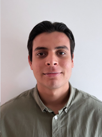

Date / Birthplace
28/04/2004, Puerto Vallarta, Jalisco.
Nationality
Mexican
Skills
- Vision
- Commitment
- Strategy
- leadership
knowledge
- Data Bases 80%
- Data Structure 90%
- Network Administration 80%
- Server Administration 80%
- C 90%
- C++ 90%
- Html 80%
- Css 80%
- JavaScript 60%
Lenguajes
Age: 20 years
CellPhone: (322)239-9555
Social Media
Instagram
Github
Profile
Education
- Centro Universitario de Ciencias Exactas e Ingenierias, Universidad de Guadalajara, Mexico.
August 2022 - Present
5th Semester
- Escuela Preparatoria Regional de Puerto Vallarta, Universidad de Guadalajara, Mexico.
2019 - 2022
- Escuela Secundaria Tecnica #56
2016-2019
Laboral Experience
I worked in google as a web developer for 2 years, after this job I started as a Proyect manager in Oracle where I got a lot of experience for 3 long years, Also I worked in IBM as a Data Base Administrator for 1 year and I was a proyect manager in the development of siiau and the UDG awarded me a recognition for my excellent work
Professional Interests
I have a lot of interest in software development and data bases, I try to learn new thing about this areas all the time, because I really enjoy learning about that and get jobs related with this areas.
Personal References
Jair Antonio Martin del Campo Mora
Software Development Engineer
Marco Antonio Mora Ortiz
Communications and Electronics Engineer